class: center <br> # Section II: Data Acquiring and Processing ## Data Acquiring, Processing and Visualisation with Python [Bayi Li](mailto:barryli081@gmail.com) .toc-wrapper[ <div class="toc"> <a href="./py-bootcamp.html#3" class="toc-item">Section I: Introduction to Python</a> <a href="data.html#2" class="toc-item">Section II: Data Acquiring and Processing</a> <a href="sdp.html#2" class="toc-item">Section III: Spatial Data Processing</a> </div> ] --- name: api .right_half[ <figure> <p>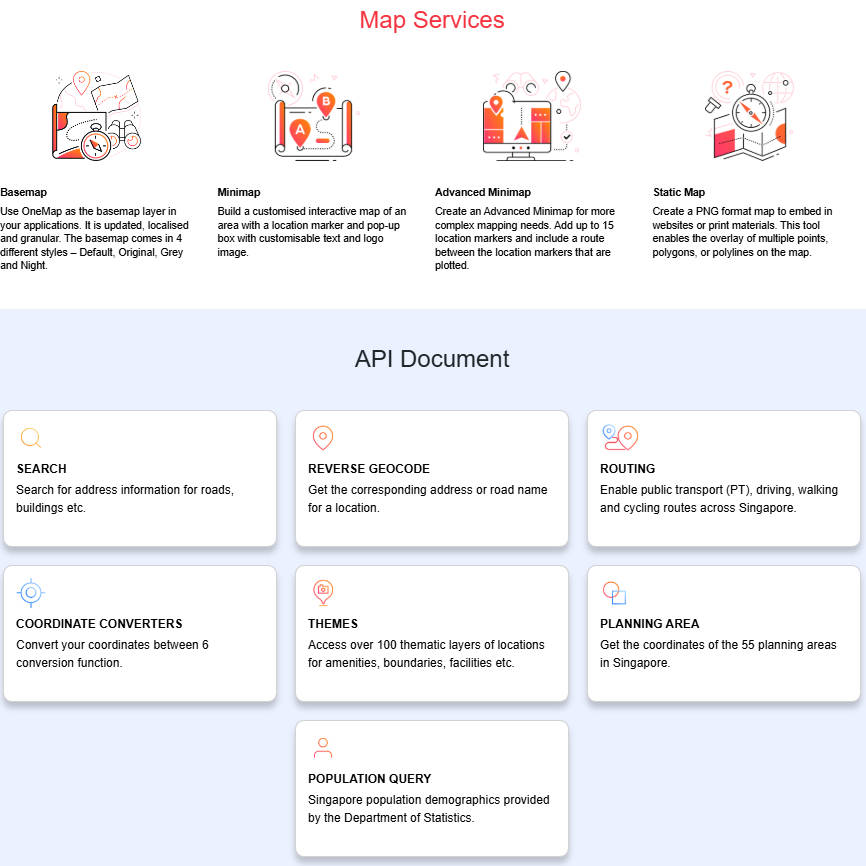</p> </figure> <figcaption>https://www.onemap.gov.sg/apidocs/</figcaption> ] ## Data Acquiring API (Application Programming Interface) <figure> <p>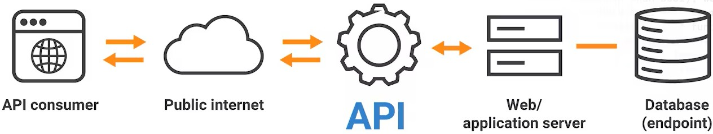</p> <figcaption>Source: https://www.akamai.com/glossary/how-do-apis-work</figcaption> </figure> ### OneMap API call OneMap is the authoritative national map of Singapore developed by the Singapore Land Authority (SLA). It provides a wide array of location-based information, geospatial services, and APIs. --- ### OneMap API call step 1: <xL>https://www.onemap.gov.sg/apidocs/register</xL> step 2: [Get your access token](https://www.onemap.gov.sg/apidocs/authentication) ```python import requests import os url = "https://www.onemap.gov.sg/api/auth/post/getToken" payload = { "email": os.environ['ONEMAP_EMAIL'], "password": os.environ['ONEMAP_EMAIL_PASSWORD'] } response = requests.request("POST", url, json=payload) print(response.text) ``` Open [2-01_data_acquiring.ipynb](https://github.com/BayiLi081/GIS-training/blob/py-bootcamp/jupyters/2-01_data_acquiring.ipynb) with Google Colab. --- .right_half[ <figure> </figure> <figcaption>[Source: reddit](https://www.reddit.com/r/googlecloud/comments/1noctxi/student_hit_with_a_5544478_google_cloud_bill/)</figcaption> ] # !Protecting your secret credential! # !Protecting your secret credential! # !Protecting your secret credential! An API key / access token is a **secret credential**. Anyone with access to it can use your account and incur costs. You must treat it like a password. --- .right_half[ <figure> <p>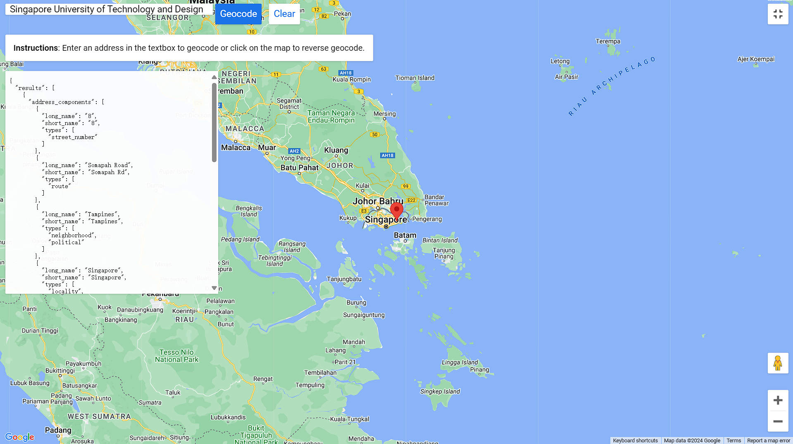</p> </figure> <figcaption>[Geocoding Service - Google for Developers](https://developers.google.com/maps/documentation/javascript/examples/geocoding-simple)</figcaption> ] ### Geocoding Geocoding is the process where it converts address into spatial data and associates the exact geographical coordinates for that address. OneMap provides Geocoding services as instructed in https://www.onemap.gov.sg/apidocs/search ### Other Useful tools - [Google Maps Platform](https://developers.google.com/maps): Provides APIs for map, including for geocoding and reverse geocoding - [Mapbox](https://mapbox.com): An alternative to Google Maps - [Esri ArcGIS Platform or ArcGIS pro](https://esri.com): Design for Esri User, but with limitation of quota - [Nominatum](https://nominatim.openstreetmap.org): An open source geocoding services - [geopy](https://github.com/geopy/geopy): A Python library to use geocoding services --- ### Notes on the Geocoding - Street names/Postcodes are not unique to a specific country. A postcode could refer to multiple locations in different countries. <xL>it is better always to specify the country name.</xL> - A postcode may represent a small area unit or branches of the same facilities, which cannot be used to identify an accurate location by postcode alone. **Example of Indonesia's Postcode system** Indonesia's postcode system, known locally as "Kode Pos," is a five-digit numerical code used to simplify the sorting and delivery of mail. The first two digits represent the province or metropolitan area, while the subsequent digits further refine the location to specific districts and sub-districts. A postcode generally cannot be used to identify a specific house. While postcodes help narrow down locations, they typically cover multiple houses, buildings, or even entire neighborhoods. To pinpoint a specific house, you would need additional address details such as the street name and house number. --- .right_half[ [Example of queried json by OneMap](https://www.onemap.gov.sg/apidocs/search): ```json { "found": 1, "totalNumPages": 1, "pageNum": 1, "results": [ { "SEARCHVAL": "640 ROWELL ROAD SINGAPORE 200640", "BLK_NO": "640", "ROAD_NAME": "ROWELL ROAD", "BUILDING": "NIL", "ADDRESS": "640 ROWELL ROAD SINGAPORE 200640", "POSTAL": "200640", "X": "30381.1007417506", "Y": "32195.1006872542", "LATITUDE": "1.30743547948389", "LONGITUDE": "103.854713903431" } ] } ``` ] ### Json File A JSON file as **nested tabular data** means representing hierarchical (nested) JSON structures in a way that resembles tables while preserving parent–child relationships. We can use [a JSON viewer/formatter website](https://jsonformatter.org/json-viewer) to understand and explore data structures --- [Example: Query of Nearby Transport](https://www.onemap.gov.sg/apidocs/nearbytransport) ```Python import requests url = "https://www.onemap.gov.sg/api/public/nearbysvc/getNearestMrtStops?latitude=1.4044693603639506&longitude=103.90083627504391&radius_in_meters=1000" headers = {"Authorization": "**********************"} response = requests.get(url, headers=headers) print(response.text) ``` --- ## Data.gov.sg https://data.gov.sg/datasets?formats=CSV&resultId=d_8b84c4ee58e3cfc0ece0d773c8ca6abc .left_half[ ```python import requests dataset_id = "d_8b84c4ee58e3cfc0ece0d773c8ca6abc" url = "https://data.gov.sg/api/action/datastore_search?resource_id=" + dataset_id response = requests.get(url) print(response.json()) ``` ] .right_half[ <figure> <p>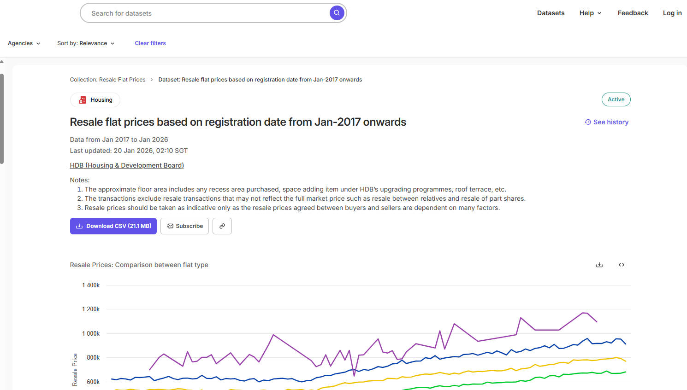</p> </figure> ] .clear[ ] --- name: tables ## Tabular Data csv: most recommended and common tabular data format because it is simple, reliable, and widely supported ```python import pandas as pd df = pd.read_csv("data.csv") ``` ```python pd.read_csv("data.csv", sep=";") # custom separator pd.read_csv("data.csv", header=0) # header row pd.read_csv("data.csv", encoding="utf-8") ``` excel: an external excel engine (openpyxl for .xlsx or xlrd for .xls) ```python import pandas as pd df = pd.read_excel("data.xlsx") ``` ```python pd.read_excel("data.xlsx", sheet_name="Sheet1") ``` Open [2-02_tabular_data.ipynb](https://github.com/BayiLi081/GIS-training/blob/py-bootcamp/jupyters/2-02_tabular_data.ipynb) with Google Colab. --- name: join ### Table Join .left_half[ **(INNER) JOIN**: Returns records that have matching values in both tables **LEFT (OUTER) JOIN**: Returns all records from the left table, and the matched records from the right table <p>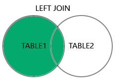</p> ] .right_half[ **FULL (OUTER) JOIN**: Returns all records when there is a match in either left or right table **RIGHT (OUTER) JOIN**: Returns all records from the right table, and the matched records from the left table ] .clear[ ] <figcaption>Source: https://www.w3schools.com/sql/sql_join.asp</figcaption> Reference: https://pandas.pydata.org/docs/reference/api/pandas.DataFrame.join.html --- ### Survey Data Processing Surveys, a common method of collecting opinions, often produce rich yet complex datasets. In survey responses, these datasets typically include **categorical, textual, and numerical variables**. We will address tasks such as **recoding categorical variables** and summarising the characteristics of **categorical variables** and **textual variables**. In this practice, we will be using a dataset of survey responses from London Assembly Cycle Survey Responses. References: None (2023). london-assembly-cycle-survey-responses (from London Assembly Cycle Survey Responses) [Data set resource]. University of Glasgow. https://data.ubdc.ac.uk/dataset/london-assembly-cycle-survey-responses/resource/bd0aed6f-f5f8-4143-9200-ee26e13e6525 --- ### Categorical variables | R | Python | | ------------------------------------------------------------ | ------------------------------------------------------------ | | Factors | Categorical Data | | Factors are used for categorical variables, storing levels as integers internally. | Pandas `Categorical` data type is the equivalent. | | factor_var <- factor(c("low", "medium", "high")) | import pandas as pd<br/>cat_var = pd.Categorical(["low", "medium", "high"]) | Both optimize memory usage for categorical data and simplify group-based operations. --- ### Categorical variables .left_half[ **Nominal** A categorical variable with **unordered categories**. ] .right_half[ **Ordinal** A categorical variable with ordered categories. ] .clear[ ] <p>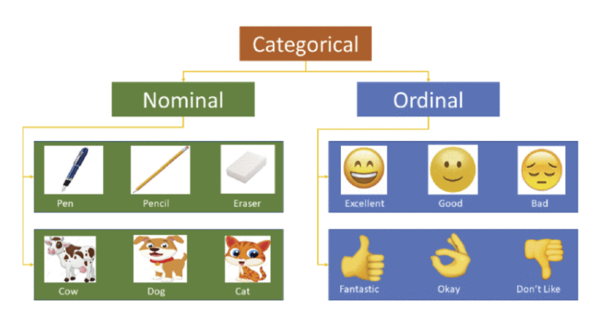</p> <figcaption>Source: https://en.wikipedia.org/wiki/Nominal_category</figcaption> --- name: vis ## Visualisation .left_half[ Exploratory Data Analysis (EDA) is an approach to analysing datasets to summarise their main characteristics, often using visual methods. **A quick way to understand the data.** For datasets with multiple variables, **Exploratory Data Analysis (EDA)** is an essential method for understanding **data distributions and intercorrelations**. <figure> <p>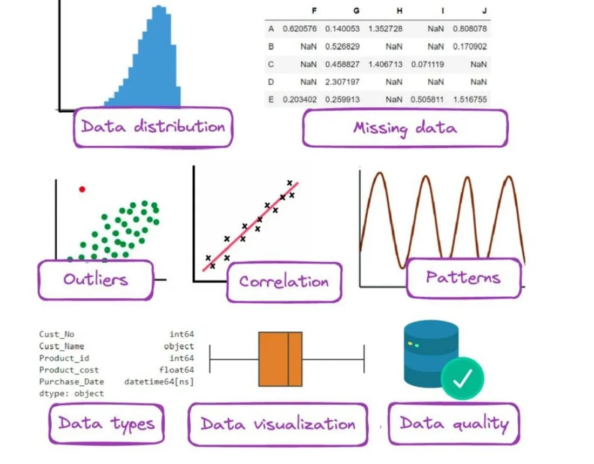</p> </figure> <figcaption>Exploratory Data Analysis.</figcaption> <figsubcaption>Source: https://medium.com/@WenxinZhang98/exploratory-data-analysis-83bfb1f17dc5</figsubcaption> ] .right_half[ We will create high-quality visualisations using Python libraries like **Matplotlib** and **Seaborn**, enabling clear communication of insights. 1. **[Matplotlib](https://matplotlib.org/)**: foundation library 2. **[Seaborn](https://seaborn.pydata.org/index.html)**: Uses Matplotlib under the hood 3. **[Plotly](https://plotly.com/python/getting-started/)**: interactive visualisation ] --- .right_half[ <figure> <p>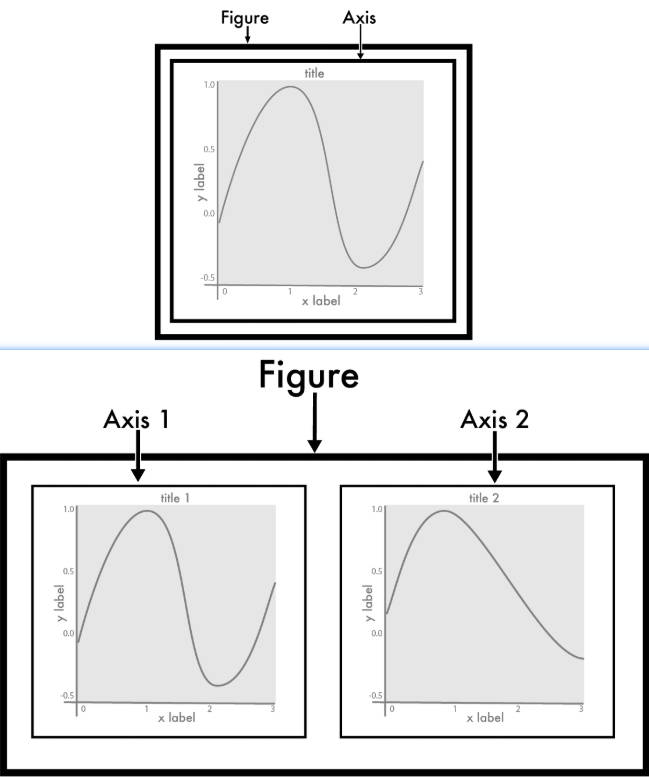</p> </figure> <figcaption>A figure created using matplotlib can contain one or many plots, or axis objects.</figcaption> <figsubcaption>Source: [Earth Lab, Alana Faller](https://earthdatascience.org/courses/scientists-guide-to-plotting-data-in-python/plot-with-matplotlib/introduction-to-matplotlib-plots/)</figsubcaption> ] ### Matplotlib Matplotlib is one of the most popular visualisation packages in Python. It can be thought of as the **Python equivalent of ggplot in R**. Many advanced visualisation packages are built on top of it. #### Figure and Axes - **Figure**: The overall container for all plot elements. It can contain multiple Axes. - **Axes**: It is a component of the Figure that defines a subplot. It manages all the details within the subplot. We can customize the x-axis and y-axis limits, labels, and the type of graph. .clear[ ] Open [2-03_data_vis.ipynb](https://github.com/BayiLi081/GIS-training/blob/py-bootcamp/jupyters/2-03_data_vis.ipynb) with Google Colab. --- .right_half[ <figure> <p>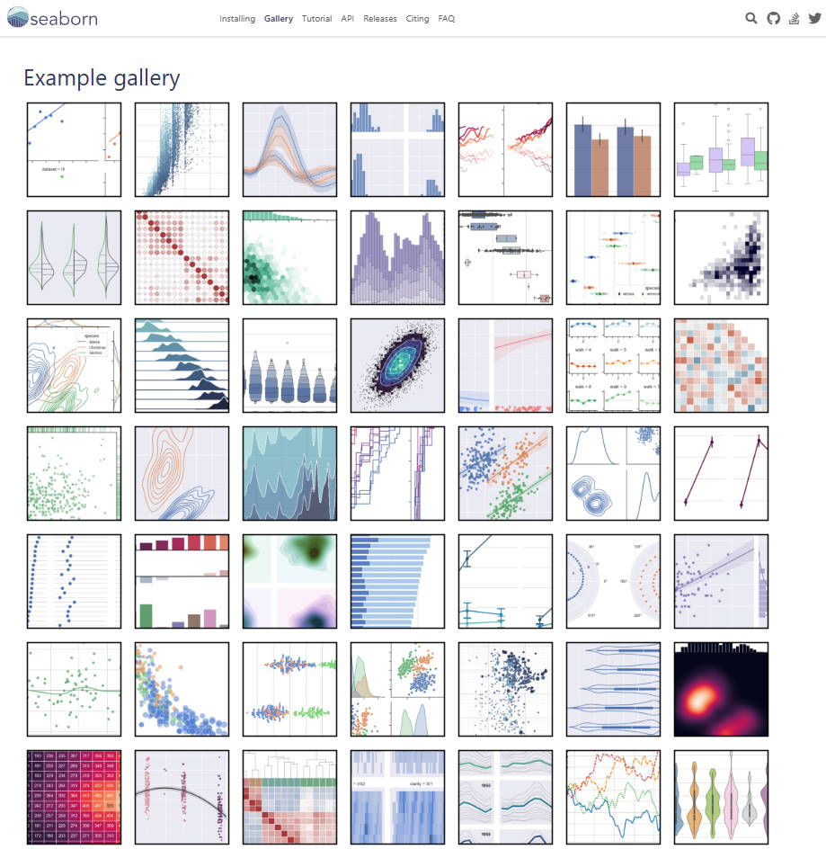</p> </figure> <figcaption>The homepage of Seaborn Gallery.</figcaption> <figsubcaption>Source: https://seaborn.pydata.org</figsubcaption> ] ### Seaborn: statistical data visualisation Seaborn is a visualisation library that is **built on top of Matplotlib**. The key feature is to simplify the creation of publication-quality figures with **minimal code**. --- Seaborn is selected for this bootcamp because it lets learners make solid statistical plots fast, with less code and fewer traps than raw Matplotlib. | | **[Seaborn Gallery](https://seaborn.pydata.org/examples/index.html) ** | **[Matplotlib Gallery](https://matplotlib.org/stable/gallery/)** | |------------------|-----------------------------------------------------------------------------|--------------------------------------------------------------------------------| | |<p>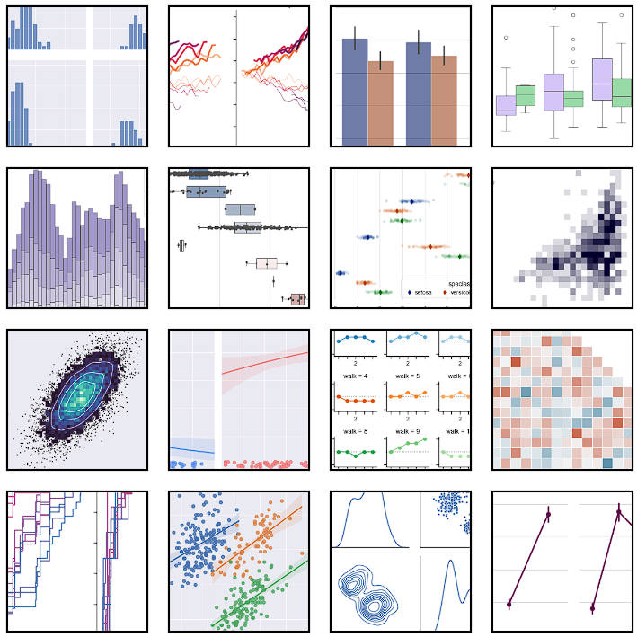</p>| <p>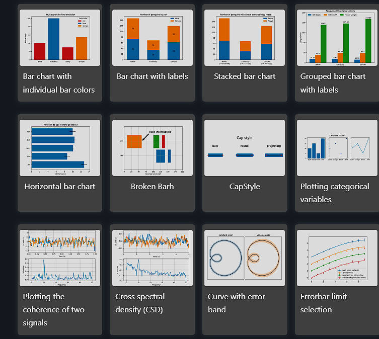</p>| | | Minimal code. | Steeper learning curve | | ------- | ------- | ------- | | **Customisation**| Limited customisation | Extremely customisable | | | relying on Matplotlib's underlying support. | with nearly all visual elements adjustable. | | ------- | ------- | ------- | | **Aesthetics** | Modern default themes | Basic default styles | | | appealing styles, and diverse color palettes. | but offers complete control to achieve aesthetic goals with extra configuration. |